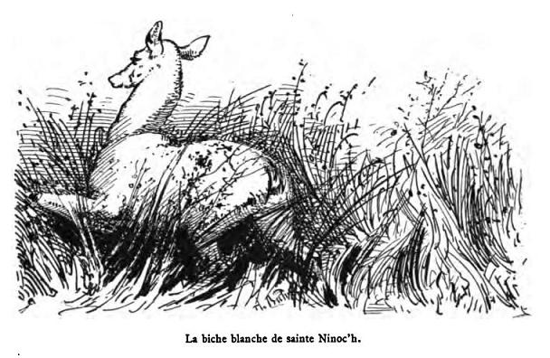
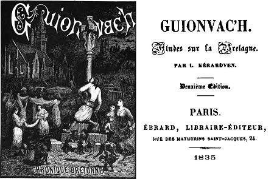

|
BREZHONEG SONEN GERTRUD GET HI VAM [1] 1. Ma mam, din a laveret En autru er c'homt da péleac'h e voet? - Da chaseal d'er choat è ma voet Da beric, ma merc'h, ez ei d'ho guelet. 2. Hir-bras e gavou er nozac'h-ma Hag autru er c'homt peleac'h ema? - Guenoc'h, ma merc'h, emaon souhet Pe houled quemet-alies ho pried. 3. -Alas! ma mamm, laveret din Pérac a can er béleien en ti? - Rac er paour-quez en-eus-ni lonjet A zo gueneomp er noz-man dicedet. 4. - Laret-té, ma mamm, pédi doué ganto, Me am eus argant ac a beo. Ma mamm, goulen a raon c'houas Perag a zon ar c'hleier ar glaz? 5. - Mab-bihan ar Roué zo maro: A zon er cleier ganton peb bro. - Ma mann, breme dime lavaret Perag a c'hoel er domestiquet? 6. -E guelhi er c'houe emaont bet Ul liser kaer on-deut kollet. - Larit de, ma ma,,, ne c'hoelen quet M'em-eus arc'hant evit cahouet. 7.Gant autru c'homt emaomp souhet Pe ne az a ket prompt da ma güeled -Alas ma mamm, lavarit din, Pe ru pe glaz ïen dan ilis? 8. An habit ru en-deuz goulennet Ac unan du e zo dei reil: -Ma mamm, dime a lavaret Perag en habit du brésantet? 9. -Alas! ma mec'h, deus e ar giz E iant en intronnez du en iliz. - E-barz er veret pe vou intréet, Bé hi fried en duz guelet: 10. Pere doc'h ma sud a zo dicédet, Pa ma en doar né fresquet? - Alas, ma merc'h, n'hallon nac'h mui: Ho pried paür a zo en-hi. 11. -Delet, ma mamm, an alvéou; Conduet en deniou paour Discouet dehe pedi Doué abret: Ho mab, ho merc'h zo dicedet. Dastumet gant Loeiz Dufilhol [2] [3] [4] |
FRANCAIS CHANT DE GERTRUDE ET SA MERE [1] 1. Ma mère, dites-moi, je vous en prie, où est allé monsieur le comte? Il est allé chasser au bois; bientôt, ma fille, il sera près de vous. 2. Oh, que cette nuit est longue!... Où donc est allé monsieur le comte? Vous m'étonnez beaucoup, ma fille, de demander si souvent votre époux. 3. Hélas! ma mère, dites... pourquoi des prêtres qui chantent dans la maison? C'est ce pauvre malheureux que nous avons logé; il est mort cette nuit au milieu de nous. 4. Dites-leur de prier pour lui... je ferai les frais du service... Mais, ma mère, je vous demande encore... pourquoi les cloches sonnent-elles des glas? 5. Le petit-fils du roi est mort, les cloches sonnent dans tous les pays. Ma mère, il faut me dire à présent... pourquoi les domestiques pleurent-elles? 6. Elles ont été laver... il leur manque un drap blanc. Ma mère, dites-leur qu'elles ne pleurent pas, je leur donnerai de quoi en avoir un autre. 7. Ah ! je suis bien étonnée; monsieur le comte ne vient pas me voir... Hélas ! ma mère, dites-moi, faut-il aller à l'église en bleu ou bien en rouge? 8. Elle a demandé un habit rouge, c'est un noir qu'on lui a donné. Ma mère, dites-moi.... pourquoi cet habit noir? 9. Hélas! ma fille, la mode en est venue... c'est en noir que les grandes dames vont à l'église. Quand elle fut entrée dans le cimetière, elle vit la tombe de son époux. 10. "Quel est celui des miens qui est mort?... voilà de la terre nouvellement remuée. Hélas ! ma fille, je ne puis plus le cacher, ton pauvre époux est là... au fond. 11. Tenez, ma mère, voilà les clefs; conduisez bien les pauvres malheureux... apprenez-leur à prier Dieu de bonne heure; votre fils est mort, votre fille est morte. Traduction de Louis Dufilhol [2] [3] [4] |
ENGLISH SONG OF GERTRUDE AND HER MOTHER [1] 1. My mother, tell me, please Where has gone the Lord Count? He is out hunting in the wood; presently, daughter, he will be back. 2. Oh, how long is this night!... Where did the lord Count go? You puzzle me indeed, daughter, by enquiring so oft about your husband. 3. Alas! Mother, tell me... Why do priests sing in the house? For a poor man we accommodated; He died last night among us. 4. Tell them they may pray for him... I shall pay for the funeral service... But, mother, I ask you again... Why do the bells ring the knell? 5. The king's grand-son is dead, The bells ring everywhere. Mother, please, tell me now... Why do the maids weep? 6. They are back from washing ... A white bed sheet is missing. Mother, tell them not to cry, I'll give them the money to buy a new one. 7. Ah! I wonder very much why the Lord Count doesn't come and see me... Alas! Mother, tell me, shall I go to church dressed in blue or in red? 8. She asked for a red dress, They gave her a black one. Mother, tell me.... Why these black clothes? 9. Alas! Daughter, such is the new fashion... Great ladies go churching in black. When she entered the churchyard, she saw the grave of her husband. 10. "Which of my relatives is dead?... Here is recently turned over earth. Alas! Daughter, I can conceal it no more, Your poor husband is here... in this grave. 11. Here, mother, are my keys; Be good to the unfortunate poor... Early teach them to pray to God; Your son is dead, so is your daughter. Translated by Christian Souchon [2] [3] [4] |
|
[1] Importance de ce texte Il représente la première publication en France d'un chant populaire sur le thème de la "mort cachée". Paru en 1835 en annexe d'un roman devenu introuvable, "Guionvac'h", il précède celles de La Villemarqué: de 2 ans, la "Korik" (parue en 1837 dans "la Revue de Paris") et de 4 ans "le Seigneur Nann et la Korrigan" (1ère édition du Barzhaz, 1839). Le thème de la biche poursuivie, qui n'existe dans aucune version bretonne collectée par ailleurs est sans doute emprunté à cet ouvrage, bien que la Villemarqué ne signale, de façon ambigüe, ce point commun avec "Guionvac'h" que dans une note de l'édition 1867. [2] La biche de Sainte Ninoc'h Ce thème est introduit dans le roman dans un dialogue entre deux personnages: (pp.11/12 de la réédition de 1890 par R. Kerviller). "Prends bien garde, Govîc, mon pauvre enfant! Ne vas pas mal parler de la biche blanche de sainte Ninoc'h, de celle qui courut, il y a plus de deux mille ans, se cacher dans l'oratoire de la sainte pendant que les chasseurs lui lançaient des épieux, que les chiens lui montraient les dents et que les cors sonnaient tout le long des montagnes de Saint-Mathieu, de l'étang de Lanenec et de la lande de Bioué... Il y a plus de mille ans... Eh bien! on la voit courir au brun de nuit, et le plomb des chasseurs ne lui fait pas plus de mal que si elle reposait encore dans l'oratoire et sur le giron de la bonne sainte Ninoc'h [...] Le jeune homme qui voit le soir, au brun de nuit, la biche blanche de sainte Ninoc'h, doit mourir le jour de ses noces." [3] L'histoire de Gertrude et Alan "Gertrude du Kerisouet venait d'épouser le jeune Alan, comte de la Saudraie. On était revenu de l'église [...] Alan et la belle Gertrude causaient tout doucement sous les peupliers devant le château, quand le feuillage remua bien fort. Gertrude serra le bras du jeune Alan, alors ils virent... Ils virent tout prés d'eux passer, comme une pierre de fronde la biche blanche de sainte Ninoc'h. Rentrons, dit Gertrude. Oh! répondit Alan, j'ai tué trop de loups, et dardé trop de sangliers pour avoir peur d'une biche blanche. Au même instant on entendit dans le bois le son du cor et comme une troupe de chasseurs qui se donnaient plaisir. Qui ose ainsi chasser sur les terres des seigneurs de la côte? s'écria le jeune Alan. Ses yeux brillaient de colère..... il s'élance pour aller voir. Écoutez maintenant la "sonen" de la belle Gertrude et de sa mère:" [ici se place la traduction française du chant ci-dessus.] [4] L'auteur Louis Dufilhol (1791-1864) Né à Lorient en 1791, ce fils de courtier maritime est un jeune homme particulièrement brillant qui est reçu 3ème à Polytechnique où il n'entera pas faute d'argent. Mais il sera l'auteur, en 1815, d'un remarquable "Mémoire sur les surfaces considérées comme lieu des sommets communs de plusieurs pyramides"! Licencié es lettres, licencié es sciences et docteur en médecine, il fit une très belle carrière dans l'enseignement et fut recteur des académies de Rennes et de Montpellier. En 1832 il fonda à Rennes avec Louis Tiercelin et une trentaine d'écrivains la "Revue de Bretagne" dans laquelle il publia la monographie des murs bretonnes contemporaines, sous le titre d' "Études sur la Bretagne". Il s'agissait de tableaux pittoresques sur les luttes, les pardons, les pèlerinages et autres coutumes alors observées dans les campagnes. Ce faisant il risquait de porter ombrage à son confrère Brizeux, qui traitait des mêmes questions mais en vers. C'est pourquoi, lorsqu'il publia les études ainsi recueillies en y adjoignant le roman "Guyonvac'h", il le fit sous le pseudonyme de Louis Kerardven. Ce volume a un intérêt spécial pour la connaissance de la littérature populaire celtique, car on y trouve, outre "Sonenn Jertrud", un certain nombre de chansons authentiques, en traduction française avec le texte breton en appendice. |
[1] An important text This text is the first occurrence in the French printed literature of a folk song featuring the theme of the "concealed death". Published in 1835 as an appendix to the (now unobtainable) short novel "Guionvac'h", it predates those of La Villemarqué: by 2 years, the "Korik" (come out in 1837 in the "Revue de Paris"), and by 4 years "Sir Nann and the Korrigan" (1st release of the Barzhaz, 1839). The theme of the hunted white doe, that is to be found in no authentically collected Breton version is without doubt borrowed from this work, though it was not until 1867 that La Villemarqué mentioned, in a note and in an ambiguous way, this similarity with "Guionvac'h". [2] The white hind of Saint Ninoc'h This theme appears in the novel in a dialogue between two characters: (pp.11/12 in the 1890 new edition by R. Kerviller). "Beware, Govîc, my poor child! Don't speak ill of Saint Ninoc'h's white hind, that ran for safety, over two thousand years ago, into the shrine of the holy girl, while hunters were hurling their spears at it, their dogs showing their teeth and the horns sounding all along the mountains around Saint-Mathieu village, the Lanenec pond and the Lann-Bioué moor... Over a thousand years ago, indeed... Yet it may still be seen running, at nightfall and the hunters' pellets do it no more harm than if it were still resting in its refuge on the lap of the good Saint Ninoc'h [...] A young man who sees, at the close of the night, Saint Ninoc'h's white hind, is doomed to die on his wedding day." [3] The story of Gertrude and Alan "Gertrude du Kerisouet had just married young Alan, Count la Saudraie. The wedding train had come back from church [...] Alan and fair Gertrude were conversing in a low tone under the poplars in front of the manor, when there was suddenly a loud rustle of leaves. Gertrude squeezed young Alan's arm and then they saw...They saw, hurrying very close past them, as swift as an arrow, Saint Ninoc'h's white hind. Let us go home, said Gertrude. Oh! answered Alan, I've killed many a wolf and speared many a boar: how could I be afraid of a white hind? In that moment the sound of a horn and the stamping of a joyful party of hunters was heard. Who dares hunt on the lands of the Lords of the Coast? cried young Alan. His eyes flamed with anger..... He rushed to see what was going on. Listen now to the "sonen" of fair Gertrude and her mother:" [here follows the French translation of the above lament.] [4] Author Louis Dufilhol (1791-1864) Born in Lorient in 1791, this son of a ship-broker was a brilliant student who came third in the admission exam to the Ecole Polytechnique which lack of money prevented him from entering. Nevertheless he composed, in 1815, a remarkable "Dissertation on surfaces considered as the locus of summits that are common to several pyramids"! Since he was Bachelor of Arts, of Science and Doctor of Medicine, he made his career in teaching in a dazzling way and was quickly promoted to Regional Director of Education in Rennes, then in Montpellier. In 1832 he founded in Rennes with Louis Tiercelin and thirty other writers the "Revue de Bretagne" in which he published his survey of the contemporary Breton way of life, dubbed as "A Study on Brittany". It consisted of picturesque depictions of wrestling matches, votive feasts ("pardons"), pilgrimages and other customs observed in the Breton countryside. Herewith he was likely to offend his colleague, the poet Brizeux, who was to deal in verse with the same topics. This is the reason why he used the nom-de-plume Louis Kerardven when he published the result of his exertions in a book to which he appended the novel "Guyonvac'h". There is a special interest in this book for those anxious to get acquainted with Celtic folk literature, as they will find in it, beside "Sonenn Jertrud", several authentic Breton songs in translation, with the corresponding in the appendix. |
